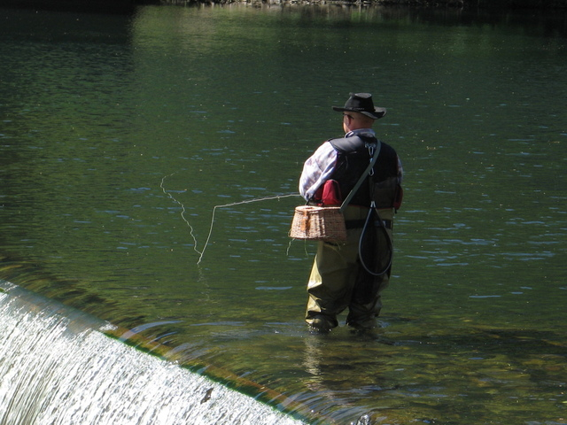

Target Audience and Scenarios
Target Audience
- Who: Have access to internet website search engines and are curious about weather conditions.
- Age: 14 to 100
- Income: Income levels will very and range in the average of 50,000 yearly.
- Education: Will also range from high school on up to higher education.
- Motivation: To acquire up to the minute accurate weather warnings, forecasts, and current conditions.
Ashley M. Berry
- Occupation:Elementary School Assistant Principal
- Demographics:35 years old. Master’s degree in education.
- Goals and motivation for using the site:Weather site used to access forecast information for professional and personal consumption. At work, she relies on data to make decisions regarding the safety and health of the children under her care (i.e., whether they can go outside and play or if they need to come in for safety). Professional and personal use to gather information regarding future outdoor conditions.
- Social:very driven individual to her work, church congregation, and family. She loves gardening and, in her downtime catching the rays of the sun by the pool.
- Technology:Primary use is her iPhone windows computer, yet she has access to many internet devices, including iPad, chrome books, apple computers, and tablets.
- Quote:“My top goal is to provide education and safety for my students, and I use tools that give me quick availability to the information I am looking for.”
Russell F. Erickson
- Occupation:ACW Commander at US Airforce Base
- Demographics:48 years old. Executive Leadership Training from the University of North Carolina at Chapel Hill.
- Goals and motivation for using the site:Acquire accurate daily forecast information for outdoor sports, fishing, and leisure activities.
- Social:enjoys the great outdoors and is an avid fly fisherman and boater.
- Technology:access to a wide array of technology yet prefers to view internet sites with the convenience of his Galaxy 8 android phone.
- Quote:“The lake is my second home and I rely on correct weather inform to fuel my preparation for upcoming events. Nothing ruins an outdoor event like not being prepared.”
Scenarios
- What’s the family reunion weekend forecast?
- How do I acquire acclimate weather warnings?
- How much rain fall is expected for gardeners?
- When can I expect to see extreme hot or cold temperature effect my area?
- Is today’s pollen count going to affect my quality of life?
- Scenario 1: What’s the family reunion weekend forecast?
- Families rely on Sunshine Forecast to plan essential events such as family reunions, weddings, vacations, and funerals.
- Scenario 2: How do I acquire acclimate weather warnings?
- When bad weather strikes people depend on accurate up to the minute weather warning from Sunshine Forecast.
- Scenario 3: How much rain fall is expected for gardeners?
- Gardeners are looking to Sunshine Forecast to supply them with the tools to keep their gardens gree.
- Scenario 4: When can I expect to see extreme hot or cold temperature effect my area?
- Cold weather can burst pipes and hot weather can be detrimental to health. Local surveys show people are choosing Sunshine Forecast for long term temperature information.
- Scenario 5: Is today’s pollen count going to affect my quality of life?
- Allergy sufferers are logging on to find out daily pollen counts for health and wellness.